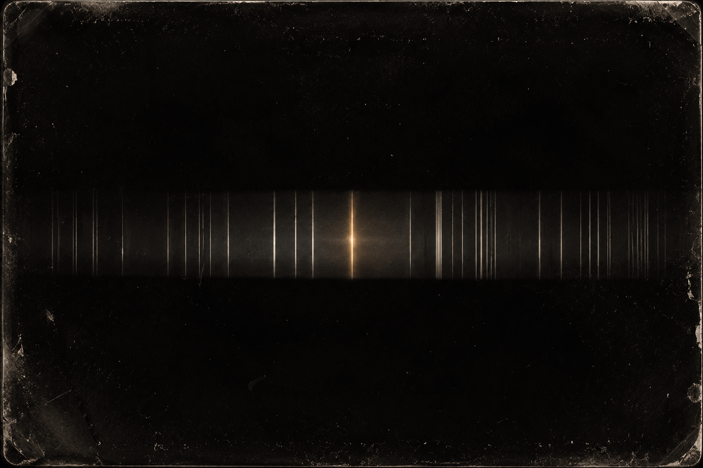

For sixty years we have been searching for a technology and calling it a search for life.
The distinction sounds pedantic. It isn’t. It has quietly shaped every antenna, every survey, every target list, and it may have shaped them wrong.
Start with the assumption underneath the whole enterprise: that someone is transmitting. Not leaking — transmitting. A beacon, deliberate or careless, loud enough to cross thousands of light-years and still register on a dish. Everything about the classical search follows from that premise. Point at the water hole. Look for the narrowband spike. Wait.
But ask what kind of civilization broadcasts.
Beacons are expensive. They are the behavior of a species with surplus energy, an expansionary temperament, and a reason to announce itself — a civilization in its growth phase, spending real power to shout into a void on the chance someone shouts back. We did it because we were young and it was thrilling and it was cheap relative to what we thought we’d learn. That is not a permanent condition. It is a mood, and moods pass.
Now ask what kind of civilization lasts.
Nothing that grows forever survives arbitrary time; exponentials end, always, one way or another. Anything still around after a very long while has closed its loops, made peace with sufficiency, and stopped needing to expand in order to continue. It has become steady-state, because steady-state is the only state that runs indefinitely. And a civilization like that has almost nothing to broadcast. No frontier to advertise, no surplus to burn on a message, no particular reason to think the void owes it a reply.
The empty intersection
Put those two together and you get the problem at the center of the search. The trait that makes a civilization detectable in principle — that it lasts long enough to be there when you look — is anti-correlated with the trait that makes it detectable in practice. The longer-lived it is, the quieter it probably is. We have been aiming at the intersection of “old enough to find” and “loud enough to hear,” and that intersection may be nearly empty.
Our own case is the warning. Humanity’s loud era is arguably closing already, seventy-odd years in. Broadcast television and high-power omnidirectional radio are giving way to fiber, to tight-beam satellite, to signals aimed precisely where they need to go and nowhere else. Efficiency is quiet. If our radio window turns out to be a century wide, then even a civilization that follows our exact path is detectable for one century out of however long it lasts — a rounding error against any lifespan worth the name. We are not the loud ones. We were briefly loud, on the way to somewhere else.
Which means radio was never a stage of intelligence. It is a contingency: one technology, in one medium, at one moment, for one purpose, on one planet. There could be people living in perfectly happy abundance on a world we can see from here, having never built a transmitter, having no need of one, having solved their problems in some other order entirely. They are not primitive. They are not hiding. They are simply not doing the one arbitrary thing our search is designed to notice.
So the search as constructed is not filtering for intelligence. It is filtering for intelligence that happens to be technological, and electromagnetic, and wasteful about it, and doing so inside our particular window. That is not a filter on aliens. It is a filter on aliens who resemble us, briefly, around 1974.
The residue
If nobody is shouting, then the only thing left to find is what a civilization cannot help emitting. Not a message — a residue. The chemical signature of an atmosphere that shouldn’t be in equilibrium. Waste heat where there is no reason for warmth. A spectral line that no geology explains. These are not announcements. They are the unavoidable exhaust of something being alive and doing things, and they have the great virtue of not requiring their source to have any interest in us whatsoever.

They also have one hard property: they are faint. A whisper carries as far as a whisper carries. Unintentional signals are not weak because their sources are far away; they are weak because nobody is trying, and no amount of distance-correction saves you from a signal that was never meant to be heard. Which settles the question of where to look. Not because far away is dead — inside our own galaxy, a thousand-year lookback is nothing against any lifespan worth detecting, and a technosignature at any range would still be the most important measurement ever made. But because far away is silent by construction. So is near. We just have a prayer of hearing a whisper next door.
That is the pivot: look close, and widen what counts as a sign. It is the least glamorous program in astronomy. No posters come out of it. It is small-signal photometry on unremarkable stars, decade-long integrations, error bars, and the constant possibility of nothing. The deep field will always be prettier. The deep field also cannot answer this question.
Safe to find
And there is a last piece, which I would put first if I thought anyone would sit still for it.
Far-field search is safe precisely because it is inconsequential. Find something at four thousand light-years and you write a paper; nobody goes anywhere. Near-field is different in kind. Anything close enough to detect by its exhaust is close enough to matter — close enough to reach, if not by us then by whatever we become. The search stops being an intellectual exercise the moment it succeeds.
So it is worth noticing who the dangerous party is in that scenario. If the durable civilizations are the quiet, sufficient, closed-loop ones, then the beings most likely to be out there are the ones with the least to gain from being found, and the most to lose from being found by something still in its growth phase, still expansionary, still hungry, still convinced that reaching is the same as arriving.
That would be us. Right now. The old space-opera reflex has it exactly backwards: the fleet on the horizon was never the threat. The threat is what a young civilization does when it finally gets somewhere.
Look closer. Open up what you’re looking for. And be the kind of thing that is safe to find.